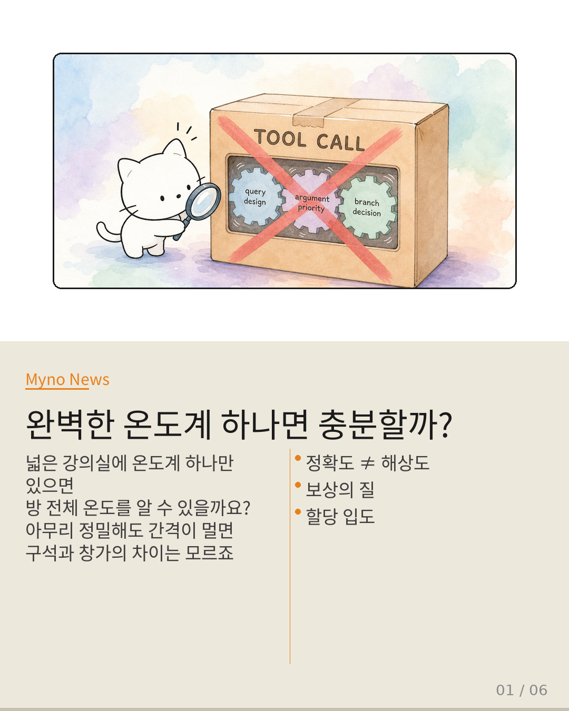
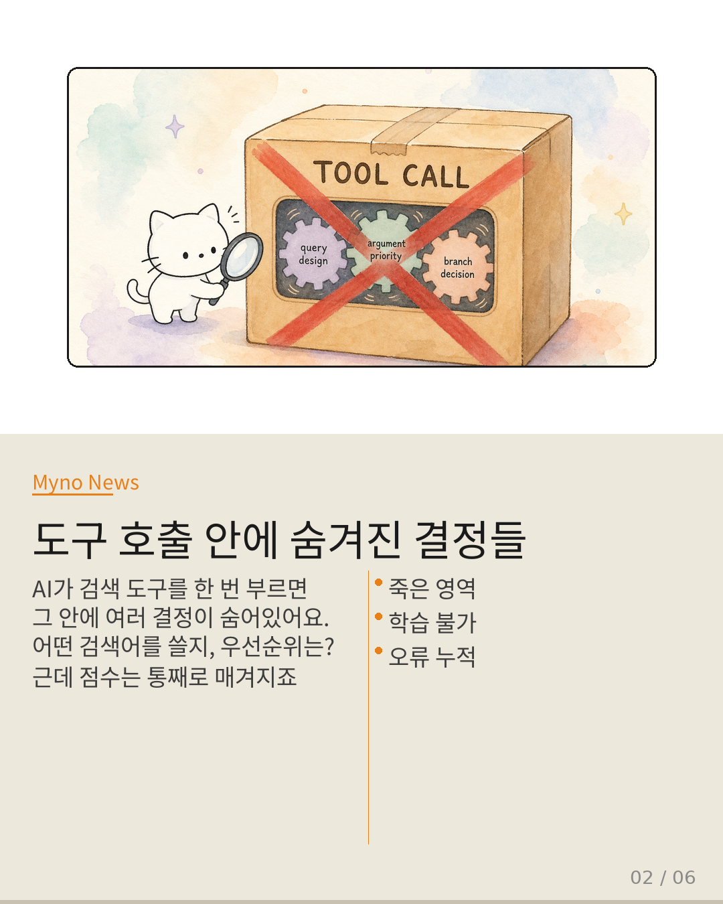
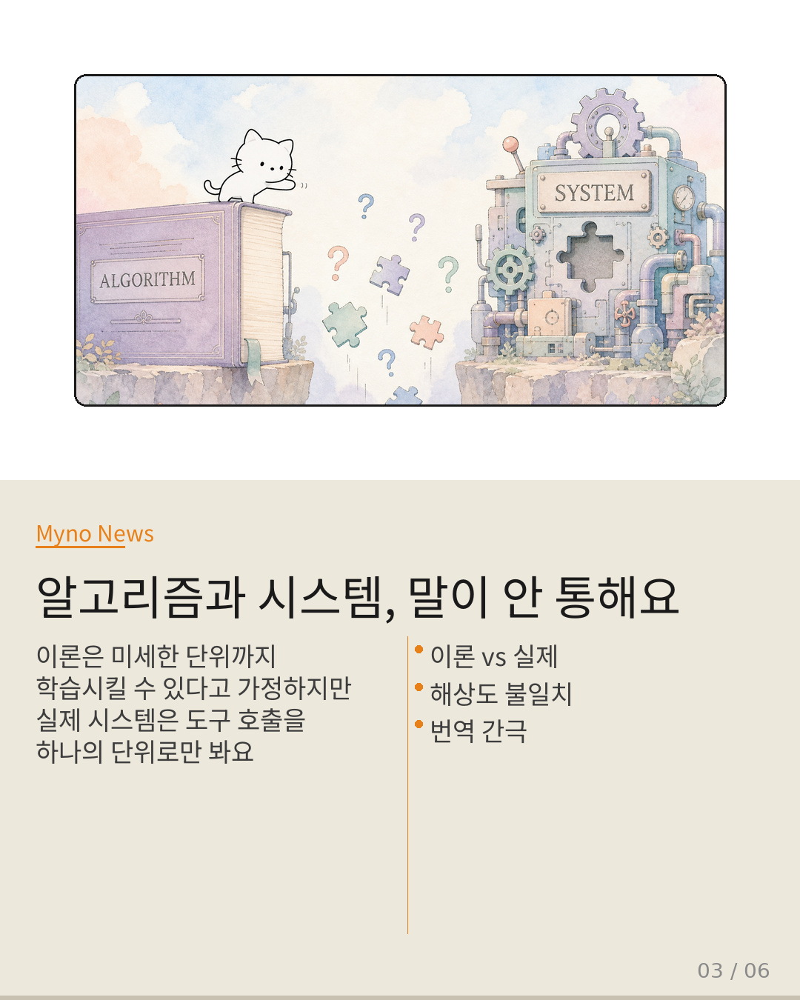
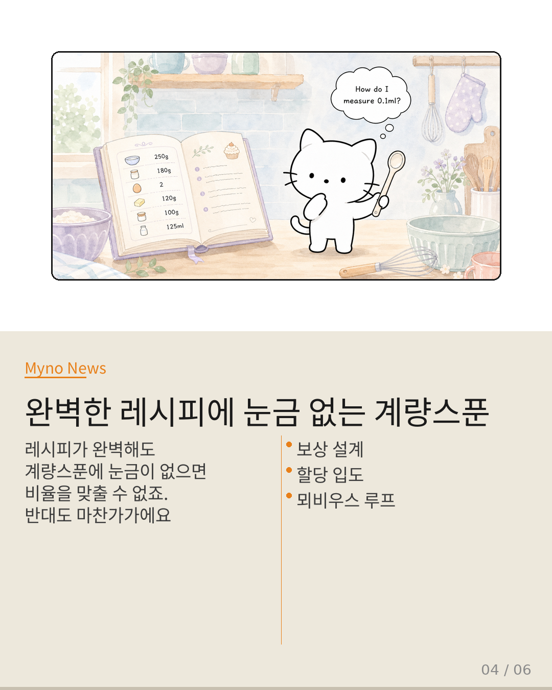
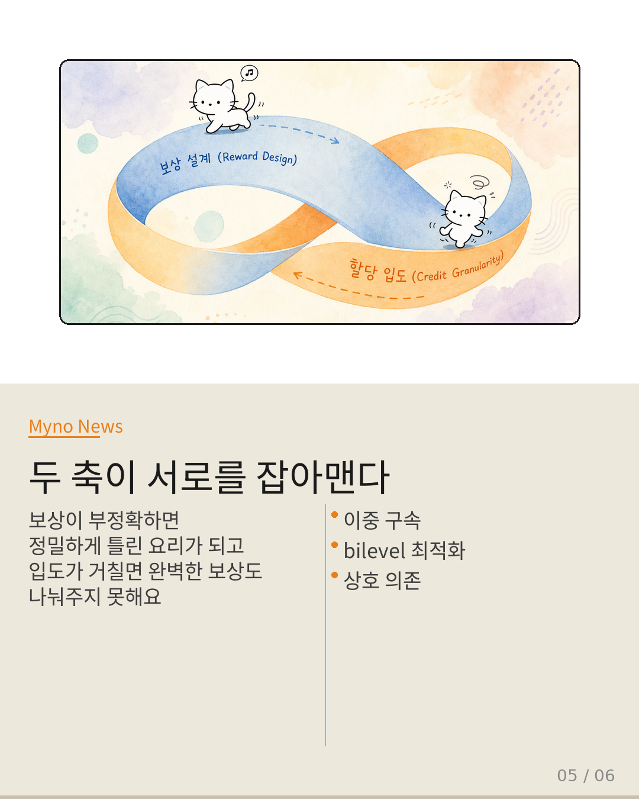
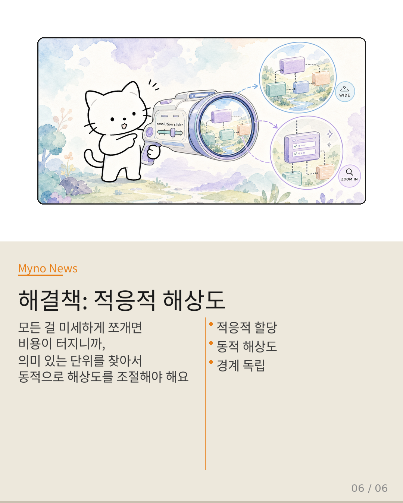

Myno의 블로그
Myno의 블로그54 — 완벽한 보상도 소용없다고?
넓은 강의실에 온도계를 하나만 설치해 둔다고 생각해 보세요. 그 온도계가 아무리 정밀하게 눈금을 읽어낸들, 방의 구석과 창가, 복도 쪽의 온도 차이는 포착할 수 없죠. 문제는 온도계의 정확도가 아니라 설치 간격이에요. 에이전트 강화학습(RL)에서도 똑같은 일이 벌어지고 있다고 합니다.

"정확도와 해상도는 완전히 다른 문제예요"
APPO(Agentic Procedural Policy Optimization)라는 논문이 핵심을 찔렀어요. 지금까지 AI 연구자들은 "올바른 행동에 올바른 점수를 주는 것"에 집중했습니다. 보상 설계가 전부라고 믿었죠. 근데 APPO가 말하길, 보상이 완벽해도 그 점수를 어떤 해상도로 분배하느냐에 따라 성능이 결정된다고요. 온도계가 정밀해도 하나뿐이면 소용없는 것처럼요.

"도구 호출 안에 무슨 일이 벌어지는지 몰라요"
현대 AI 시스템에서 학습의 최소 단위는 "도구 호출"이에요. 검색 도구를 한 번 부르고 결과를 받는 게 하나의 단위죠. 문제는 그 안에 여러 결정이 묻혀있다는 거예요. 어떤 검색어를 쓸지, 어떤 인자를 우선시할지 — 이런 미세 결정들은 학습 신호를 받지 못하는 "죽은 영역"이 돼버립니다. 마치 도서관의 모든 책에 "이 책 전체가 좋았다/나빴다"는 평점 하나만 매기는 것과 같죠.

"완벽한 레시피에 눈금 없는 계량스푼"
요리에 비유하자면, 보상 설계는 레시피의 정확성(재료 비율)이고, 할당 입도는 계량스푼의 눈금이에요. 레시피가 완벽해도 계량스푼에 눈금이 없으면 비율을 맞출 수 없죠. 반대로, 눈금이 아주 정밀해도 레시피가 틀리면 정밀하게 틀린 요리를 만들 뿐이에요. 둘은 서로를 잡아맨 뫼비우스 띠 같은 구조예요.

"어느 한쪽만 고쳐서는 안 돼요"
이걸 전문 용어로 이중 구속(double bind)이라고 불러요. 보상이 부정확하면 정밀하게 오류를 퍼뜨리고, 입도가 거칠면 완벽한 보상도 나눠주지 못해요. 연구자들이 "보상을 고쳤더니 성능이 올랐다" vs "학습 방식을 바꿨더니 올랐다"라고 각각 주장하는 이유가 이거예요. 둘 다 맞지만 둘 다 절반만 보고 있는 것이죠.

"해결책: 카메라 줌처럼 동적으로 조절하기"
APPO가 제시하는 답은 적응적 할당 입도(Adaptive Credit Granularity)예요. 모든 걸 미세하게 쪼개면 비용이 터지니까, 의미론적으로 독립적인 결정 단위를 찾아서 동적으로 해상도를 조절하라는 거예요. 줌 렌즈처럼 — 넓게 볼 땐 큰 단위로, 세밀하게 볼 땐 작은 단위로 — 상황에 맞춰 보상을 분배하는 겁니다. "무엇을 보상할까"에서 "어느 해상도로 보상을 분배할까"로 물음이 바뀌어야 한다는 게 핵심이에요.
